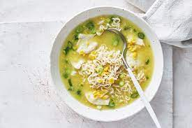

Chicken and Corn Noodle soup

Ingredients
- 2 300g cans creamed corn
- 750ml Massel chicken style liquid stock
- 400g chicken breast, thinly sliced
- 2 69g packets chicken wholegrain instant noodles, broken
- 2-3 green shallots, sliced, plus extra sliced, to serve
Steps
- Combine the creamed corn and chicken stock in a large saucepan over medium-high heat. Bring to a simmer
- Add the chicken and simmer, stirring, for 2 minutes
- Add the noodles, discarding flavour sachet and simmer for further 4 minutes or until the chicken is cooked through and the noodles are soft. Addd the shallot and cook for 1 minute
- Serve with extra shallot(according to personal preference).. Enjoy
Go to homepage